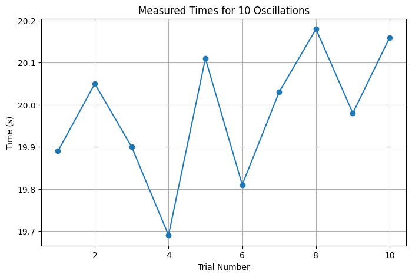
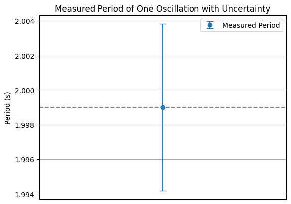
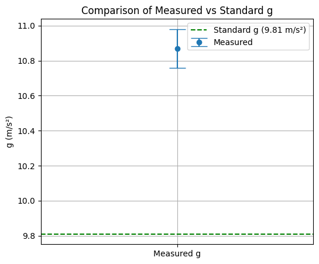

🎓 Measuring Earth's Gravitational Acceleration with a Pendulum
A Hands-On Experimental Physics Project
🎯 Motivation
- The acceleration due to gravity, \(g\), is a fundamental physical constant.
- It influences motion, engineering, astronomy, and nearly every aspect of physics.
- One of the simplest methods to measure \(g\) is with a simple pendulum.
- In this project, we use real measurements and analyze uncertainty carefully to determine \(g\).
🧪 Materials
- A charger cable (\~1.10 meters)
- A small weight (the connector itself)
- Stopwatch (or smartphone timer)
- Ruler or tape measure
⚙️ Setup
- The connector was used as the pendulum bob, suspended from the 110 cm cable.
- The pendulum length \(L\) was measured from the suspension point to the center of the mass.
- Measurement resolution = 1 cm → Uncertainty \(\Delta L = 0.005 \text{ m}\)
⏱️ Data Collection
- The pendulum was displaced by less than 15° and released.
- We timed 10 complete oscillations using a stopwatch.
- This was repeated 10 times, giving 10 measurements of \(T_{10}\).
✅ Real Observation – What We Actually Did
We didn’t simulate this — we built a real pendulum, made it swing, and used a stopwatch to record real, repeated measurements.
All calculations, graphs, and uncertainty analyses are based on this actual experimental data.
➡️ This is hands-on science, not theory alone.
📋 Raw Measurements
| Trial | \(T_{10}\) (s) |
|---|---|
| 1 | 19.89 |
| 2 | 20.05 |
| 3 | 19.90 |
| 4 | 19.69 |
| 5 | 20.11 |
| 6 | 19.81 |
| 7 | 20.03 |
| 8 | 20.18 |
| 9 | 19.98 |
| 10 | 20.16 |
📈 Graph 1: Distribution of \(T_{10}\) Measurements
import matplotlib.pyplot as plt
times = [19.89, 20.05, 19.90, 19.69, 20.11, 19.81, 20.03, 20.18, 19.98, 20.16]
plt.figure(figsize=(8, 5))
plt.plot(range(1, 11), times, marker='o')
plt.title("Measured Times for 10 Oscillations")
plt.xlabel("Trial Number")
plt.ylabel("Time (s)")
plt.grid(True)
plt.show()

📊 Step-by-Step Data Analysis
- Average time for 10 oscillations:
$$ \overline{T}_{10} = 19.990 \, \text{s} $$
- Standard deviation:
$$ \sigma_T = 0.1524 \, \text{s} $$
- Uncertainty:
$$ \Delta T_{10} = \frac{\sigma_T}{\sqrt{10}} = 0.0482 \, \text{s} $$
🧮 Calculating the Period and Uncertainty
- Period of 1 oscillation:
$$ T = \frac{\overline{T}_{10}}{10} = 1.999 \, \text{s} $$
- Uncertainty:
$$ \Delta T = \frac{\Delta T_{10}}{10} = 0.00482 \, \text{s} $$
📈 Graph 2: Period with Uncertainty
T = 1.999
dT = 0.00482
plt.errorbar([1], [T], yerr=[dT], fmt='o', capsize=5, label="Measured Period")
plt.axhline(y=T, color='gray', linestyle='--')
plt.title("Measured Period of One Oscillation with Uncertainty")
plt.ylabel("Period (s)")
plt.xticks([])
plt.grid(True)
plt.legend()
plt.show()

🌍 Calculating Gravitational Acceleration
\[
g = \frac{4\pi^2 L}{T^2} \quad \text{with} \quad L = 1.10 \, \text{m}
\]
\[
g = \frac{4 \cdot \pi^2 \cdot 1.10}{(1.999)^2} \approx 10.87 \, \text{m/s}^2
\]
📏 Uncertainty in \(g\)
\[
\Delta g = g \cdot \sqrt{\left( \frac{\Delta L}{L} \right)^2 + \left( 2 \frac{\Delta T}{T} \right)^2}
\]
\[
\Delta g = 10.87 \cdot \sqrt{\left( \frac{0.005}{1.10} \right)^2 + \left( 2 \cdot \frac{0.00482}{1.999} \right)^2}
\approx 0.11 \, \text{m/s}^2
\]
📈 Graph 3: Comparing Measured and Standard \(g\)
plt.figure(figsize=(6, 5))
plt.errorbar(['Measured g'], [10.87], yerr=[0.11], fmt='o', capsize=10, label="Measured")
plt.axhline(y=9.81, color='green', linestyle='--', label="Standard g (9.81 m/s²)")
plt.title("Comparison of Measured vs Standard g")
plt.ylabel("g (m/s²)")
plt.legend()
plt.grid(True)
plt.show()

📌 Final Result
\[
g = (10.87 \pm 0.11) \, \text{m/s}^2
\]
✅ The measured value is slightly higher than the standard (9.81 m/s²) ✅ The uncertainty is reasonable and based on real data
🧠 What Did We Learn?
- Repeated trials help minimize random errors.
- Proper attention to timing and angle keeps the setup valid.
- Even basic tools like a charger cable and stopwatch are enough to conduct real physics.
- The accuracy depends on both measurement precision and careful uncertainty analysis.